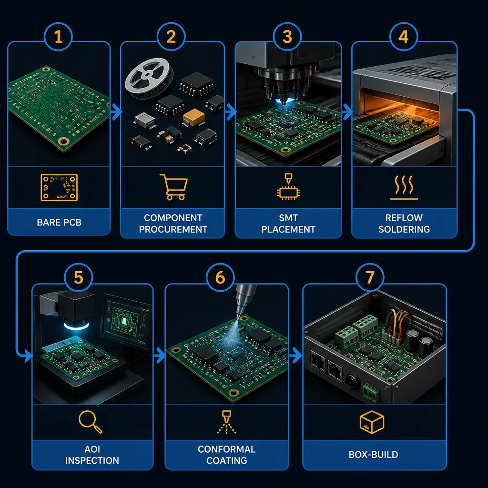
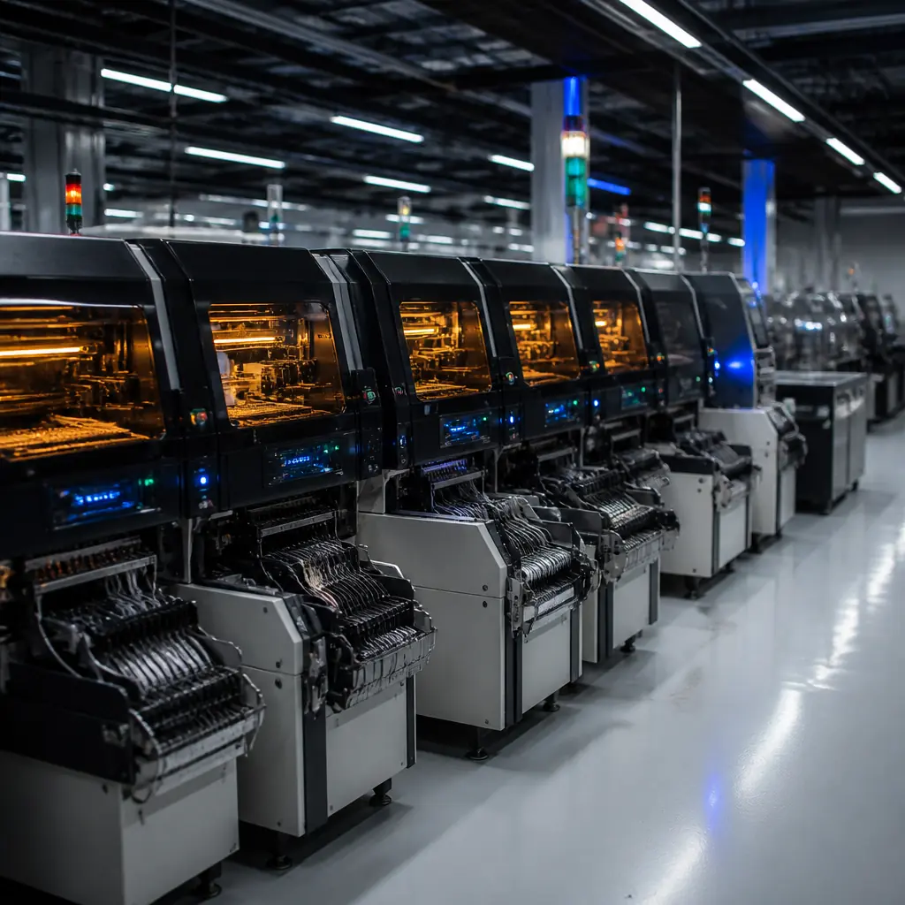
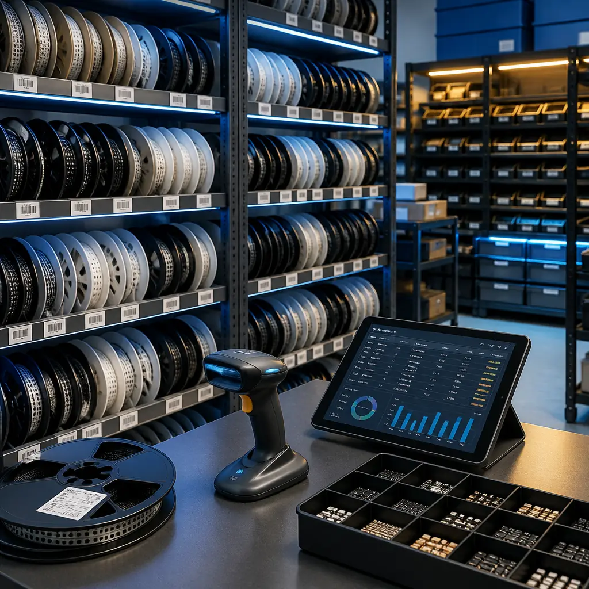
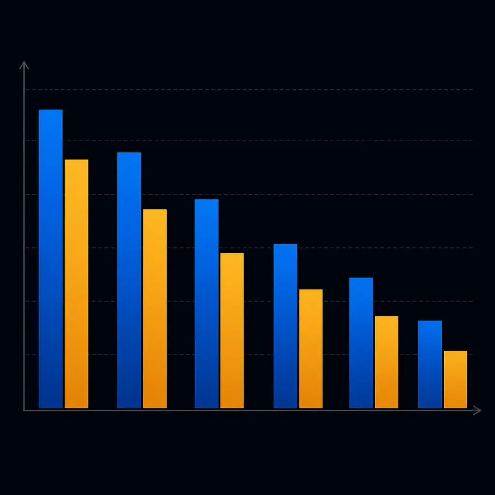

Managing five suppliers for one product is expensive in ways that don't show up on any invoice. Every handoff adds lead time. Every supplier boundary creates a quality gap that nobody owns. Every separate PO adds administrative overhead that procurement teams don't notice until they tally the cost of a single NPI cycle.
Turnkey PCB assembly collapses this supply chain into one contract. One supplier handles component procurement, SMT assembly, through-hole soldering, testing, conformal coating, and box-build integration. You receive finished, tested assemblies — not bare boards that still need three more suppliers. At Huaxing PCBA, we run 8 SMT lines with 8 million solder joints per day capacity across our Shenzhen facility, providing turnkey service to 150+ customers in 30+ countries.

What "Turnkey" Actually Covers (And What It Doesn't)
The term "turnkey PCBA" gets used loosely. Some suppliers mean "we'll solder the components you send us." That's consignment assembly — not turnkey. Here's what a true turnkey service includes, and where the boundaries lie:
| Service Layer | Turnkey | Consignment | Partial Turnkey |
|---|---|---|---|
| BOM component sourcing | ✓ Supplier-managed | ✗ Customer provides | Customer provides ICs, supplier sources passives |
| PCB fabrication | ✓ Included | ✗ Separate supplier | ✓ Included |
| SMT + through-hole assembly | ✓ Included | ✗ Assembly only | ✓ Included |
| AOI + X-ray + functional test | ✓ Included | Varies | ✓ Included |
| Conformal coating | ✓ Included | ✗ Separate supplier | ✓ Included |
| Box-build / enclosure assembly | ✓ Included | ✗ Separate supplier | ✗ Separate supplier |
| Logistics / drop-ship | ✓ Included | Customer arranges | ✓ Included |
The critical distinction: turnkey means the supplier owns component procurement risk. If a part goes EOL mid-production, the supplier finds and qualifies the replacement — not your engineering team. If a reel of 10,000 0402 resistors arrives with incorrect markings, the supplier absorbs the rework cost, not your production line.
Cost Reality Check: Consignment assembly looks 15-25% cheaper on a per-board quote, but when you add component management overhead, inbound inspection labor, inventory carrying cost, and the cost of one production stoppage from a missing reel, the total program cost typically favors turnkey by 8-15%. For volumes above 500 units, turnkey is almost always cheaper when you measure total cost of ownership — not just assembly line-item price.

The Component Supply Chain: Where Turnkey Earns Its Margin
The hardest part of electronics manufacturing isn't assembly — it's component procurement. In 2025-2026, the global semiconductor supply chain has stabilized from the 2021-2023 crisis, but individual part families still experience 16-26 week lead times (STM32, certain TI analog ICs, specialized connectors). A turnkey supplier handles this complexity as a core competency:
1. Multi-Source BOM Validation Before Production Starts
Before the first board enters SMT, a competent turnkey supplier validates every BOM line item against 5+ authorized distributors (Digi-Key, Mouser, Arrow, Avnet, Future). Components with lead times exceeding the project schedule are flagged with alternate part numbers. This prevents the most expensive mistake in electronics manufacturing: discovering a 22-week lead time part during production ramp, not during design.
2. Counterfeit Component Mitigation
The counterfeit semiconductor market is estimated at $75B annually. A single counterfeit MOSFET or voltage regulator can destroy an entire production batch. Turnkey suppliers with established distributor relationships and incoming inspection protocols (verified during supplier audits) provide a procurement gate that individual design teams rarely have. Our IQC lab performs X-ray inspection, decapsulation sampling, and electrical verification on all non-authorized-distributor parts.
3. Inventory Buffer Without the Balance Sheet Hit
Turnkey suppliers maintain buffer stock of common passives (0402/0603 resistors and capacitors across E12/E24 values) and popular ICs at their own cost. When your assembly order requires 120,000 100nF 0402 capacitors, the supplier pulls from stock — you don't need to forecast, purchase, and warehouse them. This is particularly valuable for prototype-to-production transitions where BOM quantities change dramatically between phases.

The 5 Service Layers: How Deep Does Your Turnkey Go?
Not all turnkey programs are equal. The depth of service determines whether you're buying assembly capacity or a manufacturing partner. Here are the five layers — and the questions that distinguish genuine capability from sales claims:
PCB Fabrication + Assembly (Basic Turnkey)
PCB manufacturing and SMT/through-hole assembly under one roof. The key advantage is DFM feedback that flows directly from fabrication engineers to assembly engineers — the PCB fab team knows when a design will tombstone in reflow because they see the pad geometry daily. Our facility produces 80,000㎡ of PCBs monthly, with fabrication and assembly engineers sharing the same production floor.
Full Component Procurement (Standard Turnkey)
Layer 1 plus complete BOM sourcing. The supplier manages the entire component supply chain — from authorized distributor orders to alternate part qualification. This is where most turnkey relationships operate. The quality of procurement is what differentiates suppliers: verify component traceability during the factory audit — ask to trace a random reel on the SMT floor back to its distributor PO and manufacturer lot number.
Testing + Programming (Full-Service Turnkey)
Layer 2 plus comprehensive testing: AOI (100% of boards), X-ray (BGA/QFN packages), ICT (bed-of-nails), functional test (per your spec), and firmware flashing/programming. A supplier that runs all five test methods in-house — as we describe in our testing methods guide — catches defects at the station, not at your receiving dock. Our facility operates AOI, SPI, X-ray, ICT, and FCT in a continuous inspection flow.
Conformal Coating + Environmental Protection
Layer 3 plus conformal coating (acrylic, silicone, urethane, or parylene) for environmental protection. Essential for automotive electronics, industrial controls, and outdoor equipment. The process requires selective coating equipment and masking — a separate supplier for this step introduces a new quality boundary at the worst possible point (post-test, pre-shipment). We run this in-house.
Box-Build + Logistics (Total Turnkey)
The complete package: PCB + assembly + components + test + coating + enclosure assembly + cabling + packaging + drop-ship to your end customer or distribution center. This is the true "one PO" model. For hardware startups and mid-size OEMs, this eliminates the need for in-country warehousing and final assembly labor.
When Turnkey Saves Money — And When It Doesn't
Turnkey is not universally cheaper. The economics depend on three variables:
Volume threshold: Below 50 units, the supplier's component procurement overhead adds more cost than it saves. At 50-200 units, turnkey and consignment costs roughly converge. Above 200 units, turnkey's procurement leverage — particularly on passives purchased in full-reel quantities — delivers a clear cost advantage.
BOM complexity: A design with 30 line items (microcontroller + passives + connectors) sees minimal turnkey advantage — the BOM is simple enough manage internally. A design with 300+ line items across 15 distributor part numbers sees dramatic turnkey savings because the procurement coordination cost alone exceeds the assembly labor cost. Our average turnkey project runs 150-400 unique BOM lines.
Lifecycle stage: For NPI and prototype phases, the flexibility of managing your own component stock can be valuable — rapid design changes are easier when you control inventory. For production (500+ units), turnkey is almost always the right economic choice. Read our prototype vs production guide for the economics at each stage.

How to Qualify a Turnkey PCB Assembly Partner
The price quote tells you almost nothing. Here's what actually predicts a successful turnkey relationship:
- Component procurement transparency: Ask to see a sample BOM with line-item pricing broken out by component cost vs. procurement markup. A supplier that hides markup in the assembly line price is one you can't optimize with.
- Alternate part qualification process: "We'll find an alternative" is not a process. Ask: what distributor portals do you query? Do you require customer approval before substituting? What's your policy on date code freshness — will you ship boards with components within 6 months of date code?
- Quality system integration: A turnkey supplier's quality system must span every service layer. IPC-A-610 Class 3 acceptance criteria should apply to the PCB, the assembly, the conformal coating, AND the box-build — not just the solder joints. Our supplier audit checklist covers what to verify at each station.
- DFM feedback loop: Before the first production run, the supplier should return a DFM report identifying: pad geometry issues, component spacing violations, solder mask slivers, and BOM-substitution opportunities that reduce cost. Our DFM guide covers the 8 rules that cut costs by 30% — a competent turnkey supplier applies all of them.
- Scalability proof: A supplier running 2 SMT lines cannot absorb your volume ramp from 500 to 50,000 units. Verify current capacity, not promised capacity. Our facility runs 8 SMT lines with demonstrated 8 million solder joints per day throughput and IPC-A-610 Class 2/3 certification across all lines.
The Hidden Cost: What Goes Wrong When Turnkey Goes Wrong
Turnkey failures follow a predictable pattern. Understanding these failure modes — and how to prevent them — is more valuable than comparing price quotes:
1. Component substitution without approval: A supplier swaps your specified 1% tolerance resistor for a 5% part because it was in stock. The board passes functional test but fails in the field under temperature extremes. Prevention: specify approval-required substitution policy in the contract, and verify during the first article inspection.
2. Test coverage gaps at layer boundaries: The PCB passes bare-board test, and the assembly passes ICT — but the connection between them (solder joint quality) isn't tested until functional test, which only covers the paths that have test points. Prevention: require 100% AOI post-reflow plus X-ray on all BGA and QFN packages. These are standard in our facility, not optional add-ons.
3. Box-build quality treated as secondary: The supplier is excellent at PCB assembly but the enclosure assembly station is an afterthought — loose screws, misaligned connectors, missing cable ties. Prevention: include box-build workmanship samples in the quality agreement, and inspect the first 5 box-build units yourself or through a third-party inspector.
Red Flag: If a supplier cannot show you the specific IPC-A-610 acceptance criteria they use for box-build inspection — not just SMT inspection — they treat final assembly as a secondary service. A genuine turnkey supplier applies the same quality rigor to every service layer.
Getting Started: What to Send for a Turnkey Quote
A complete turnkey RFQ package enables an accurate quote in one round — not three rounds of back-and-forth:
- Gerber files + drill file + BOM (with manufacturer part numbers): Without full MPNs, the supplier can only provide a ballpark estimate. "10µF capacitor, 0805" could be $0.02 or $0.50 depending on dielectric, voltage rating, and tolerance.
- Assembly drawings + pick-and-place file (centroid): Enables the supplier to generate an accurate SMT programming estimate and identify any placement issues before quoting.
- Test specification: What test methods, coverage targets, and pass/fail criteria? "Functional test" has a $500-to-$50,000 range depending on complexity.
- Volume + delivery schedule: Single delivery vs. scheduled releases changes inventory strategy and panel utilization. "10,000 units over 12 months in monthly releases of 833" gets a different structure than "10,000 units all at once."
At Huaxing PCBA, our turnkey RFQ response includes a line-item cost breakdown (PCB, components, assembly, test, coating, box-build), a DFM report identifying 3-5 cost optimization opportunities, and a production schedule with milestone dates. Response time: 24 hours for standard BOMs.